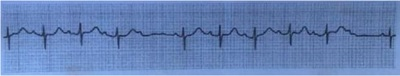
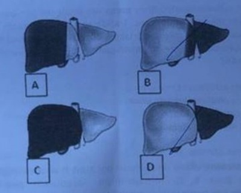
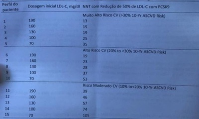

Questão 1 · Bloqueios · 4000042660Paciente feminina, 06 anos, será submetida à cirurgia eletiva e ao ser examinada notou-se ritmo cardíaco irregular, sem outros sinais ou sintomas. Feito ECG que demonstrou: Baseado na história e ECG, o diagnóstico provável é:

A Arritmia sinusal.
B Bloqueio AV de segundo grau.
C Bloqueio AV de primeiro grau.
D Escape juncional por provável distúrbio eletrolítico.
Questão 2 · Cardiologia · 4000042636No paciente com insu ciência cardíaca, ao se prescrever espironolactona para uso prolongado deve-se estar atento para o seguinte efeito colateral:
A Ototoxidade.
B Hipercalemia.
C Hiperglicemia.
D Nefrocalcinose.
Questão 3 · Comunicação interatrial · 4000042627Paciente, 10 anos, durante consulta de rotina observou-se hiperfonese de B1 e desdobramento xo de B2. Sopro sistólico +/6 em borda esternal esquerda. Pressão arterial e pulsos normais. É uma criança saudável e joga futebol. Diante do relato qual lesão cardíaca é a mais provável?
A Comunicação interatrial.
B Estenose de valva pulmonar.
C Persistência do canal arterial.
D Comunicação interventricular.
Questão 4 · Convulsão f ebril · 4000042614A respeito da convulsão febril é correto afirmar que:
A Caracteriza-se por duração maior de 30 minutos.
B Necessita da realização de punção lombar em todos os casos.
C Constitui um evento mais frequente acima dos cinco anos de idade.
D Associa-se a febre, não recorrendo, na maioria dos casos, na mesma doença febril.
Questão 5 · Maturação sexual no sexo f eminino · 4000042600Assinale o primeiro sinal visível de adolescência nas meninas:
A Menarca.
B Maior velocidade de crescimento.
C Aparecimento de botões mamários.
D Pilificação pubiana na forma de triângulo.
Questão 6 · 3 meses · 4000042590Assinale a alternativa compatível com o desenvolvimento emocional, cognitivo e físico do lactente aos 03 meses de idade.
A Reflexo de moro típico ausente; tenta rastejar até um brinquedo; predomina o padrão tônico-cervical.
B Senta com as costas eretas; pula ativamente fletindo os joelhos; Predomina o padrão tônico-cervical.
C Estica-se até objetos maiores e agarra; em decúbito dorsal levanta a cabeça e rola,senta por breves intervalos; forma sons polissilábicos.
D Segura objetos com o polegar e indicador; som consoante repetitivo; é capaz de rolar;reflexo de moro típico ausente.
Questão 7 · Hipotermia neonatal · 4000042576A capacidade de manter constante a temperatura corporal é limitada no Recém Nascido e depende da idade gestacional e pós natal, do peso de nascimento e das condições clínicas do Recém-Nascido. Assinale a repercussão clínica que não ocorre na hipotermia.
A Edema ou escleredema.
B Diminuição do débito cardíaco.
C Diminuição da produção de surfactante.
D Diminuição do consumo de oxigênio.
Questão 8 · Bronquiolite · 4000042565A bronquiolite é a infecção do trato respiratório inferior mais comum em crianças pequenas. A doença resulta da obstrução inflamatória das pequenas vias aéreas e possui gravidade variável. Nas bronquiolites é correto afirmar:
A A bronquiolite ocorre principalmente em maiores de 02 anos de idade e tem quadro clínico variável.
B O vírus sincicial respiratório (VSR) é o principal agente etiológico da bronquiolite e o homem é a única fonte de infecção na natureza.
C As infecções pelo VSR conferem imunidade completa, logo não ocorre reinfecções durante a vida.
D A profilaxia da bronquiolite pelo VSR com anticorpo monocional humanizado(palivizumabe) é recomendada nos dois primeiros anos de vida, para todos os recém nascidos com idade gestacional menor que 38 semanas.
Questão 9 · Síndrome de Down · 4000042554A Síndrome de Down é a causa genética mais comum de deficiência intelectual moderada. Na síndrome de Down é correto afirmar:
A Mulheres com Síndrome de Down, que são capazes de se reproduzir, têm 50% de probabilidade de gerarem filhos com Síndrome de Down.
B Pacientes com Síndrome de Down têm grande risco de desenvolver alterações de tireoide e entre elas a mais comum é a Doença de Graves.
C Crianças com Síndrome de Down têm alteração no cromossoma 18.
D Os indivíduos com Síndrome de Down, raramente têm defeitos cardíacos congênitos e quando presentes os mais comuns são a coarctação da aorta.
Questão 10 · Quadro Clínico · 4000042543A tireoide tem um papel importante na regulação de numerosos processos metabólicos de todo o corpo. Nos distúrbios da tireoide é correto afirmar:
A O hipotireoidismo congênito é hereditário e se apresenta na maioria dos casos, com retardo no desenvolvimento mental e físico, que já é visível ao nascimento. As crianças com hipotireoidismo congênito nascem pequenas para a idade gestacional e com os reflexos mais lentos.
B A tireoide de Hashimoto ou tireoidite linfocítica crônica é rara antes da adolescência ea presença de bócio descarta o diagnóstico.
C Na tireoidite linfocítica crônica, a glândula tireoide geralmente está diminuída, comconsistência firme e indolor à palpação.
D O hipertireoidismo resulta da secreção excessiva de hormônio tireoidiano durante a infância e geralmente é causado pela Doença de Graves.
Questão 11 · Agentes etiológicos · 4000042530A pneumonia, definida como a inflamação do parênquima pulmonar, é a principal causa mundial de morte entre crianças com menos de 05 anos de idade, respondendo por cerca de 1,2 milhão (18%) no total de mortes por ano. Nas pneumonias bacterianas na infância é correto afirmar:
A Hemoculturas sempre devem ser coletadas em crianças hospitalizadas e na presença de pneumonia bacteriana tem positividade superior a 30%.
B O Haemophilus influenzae é o principal agente etiológico das pneumonias bacterianas na infância.
C Chlamydiatrachomatis, Streptococcus pneumoniae e Haemophilus influnzae são frequentes em crianças com 02 a 05 anos.
D Mycoplasma pneumoniae, Chlamydia pneumoniae e Streptococcus pneumoniae são frequentes em crianças com mais de 05 anos de idade.
Questão 12 · Diabetes Mellitus tipo 1B · Insulinoterapia no tratamento do diabetes mellitus tipo 1 · 4000042493Diabetes Mellitus tipo 1A O diabetes mellitus (DM) é uma síndrome metabólica caracterizada pela presença de hiperglicemia, com várias etiologias possíveis. Na diabete é correto afirmar:
A A presença de DM na infância ou na adolescência sempre está associada ao DM tipo 1.
B No DM tipo 1 o quadro clínico é bastante sugestivo, com aumento do apetite paradoce, pouca sede, aumento da diurese e do ganho de peso.
C O MODY é definido como um diabetes familiar com idade de diagnóstico precoce(infância, adolescência ou adultos jovens) e modo de transmissão autossômico dominante.
D A fase de ""lua-de-mel"" na DM tipo 1 ocorre durante a adolescência, quando devido à alteração hormonal, há um estímulo nas células beta, que passam a secretar alguma quantidade de insulina, havendo redução na necessidade da dose diária de insulina.
Questão 13 · Classif icação da leucemia linf oide aguda LLA morf ológica citogenética e biologia molecular · 4000042477As leucemias têm como principal característica o acúmulo de células jovens anormais, denominadas de blastos, que substituem as células sanguíneas normais na medula óssea. Nas leucemias é correto afirmar:
A A leucemia linfoide aguda (LLA) é uma doença grave e a taxa de sobrevida atual da LLA na infância é inferior a 30%.
B Nas LLA a idade entre 01 a 09 anos é um fator de bom prognóstico.
C Nas leucemias a dor óssea é rara, quando ocorre é mais comum nos membros superiores e é controlada com analgésicos habituais.
D As leucemias são raras na infância e a presença de febre significa infecção bacteriana,relacionada à neutropenia.
Questão 14 · Hematologia · 4000042455O câncer na criança difere daquele que ocorre no indivíduo adulto em decorrência do tipo de célula progenitora envolvido e dos mecanismos de transformação maligna. No câncer infantil é correto afirmar:
A A idade é um fator importante para nortear a linha de raciocínio diagnóstico. Tumoresou massas que são detectados no período neonatal são quase sempre de natureza maligna.
B Os cânceres pediátricos mais frequentes são os tumores de Wilms, neuroblastoma e em terceiro lugar as leucemias.
C A presença de dor nos membros, associada a mais de um parâmetro alterado no hemograma, sugere neoplasia maligna, e não doença reumatoide, mesmo na ausência de blastos no sangue periférico.
D A síndrome da veia cava superior (SVCS) representa um conjunto de sinais e sintomas decorrentes de compressão, obstrução ou trombose da veia cava superior. Na faixa etária pediátrica a causa primária mais comum da SVCS é o câncer, sendo o sarcoma, o câncer de tireoide e o neuroblastoma os mais frequentes.
Questão 15 · Rubéola · Eritema Inf eccioso · Sarampo · 4000042436Nas viroses exantemáticas a análise do tipo da lesão, dos sinais e dos sintomas concomitantes e a epidemiologia, algumas vezes, permitem inferir o diagnóstico etiológico, sem a necessidade de exames laboratoriais complementares. Nas doenças exantemáticas é correto afirmar:
A O sarampo é uma doença exantemática, que apesar dos pródromos raramente complica. A doença começa com febre, tosse, cefaleia e mal-estar que duram de 03 a 04 dias. O exantema é maculopapular róseo não confluente, inicia nas extremidades e raramente atinge a face.
B A rubéola apresenta mal-estar e febre antecedendo 01 a 02 dias do exantema, que é maculopapular róseo e se inicia nos membros inferiores, espalhando-se para o tronco e rosto em 24 horas. A orofaringe fica hiperemiada e na região oposta aos dentes molares aparecem manchas branco-azuladas, pequenas, de cerca de 01 mm de diâmetro, chamadas de manchas de Koplik.
C A Roséola infantil ou exantema súbito apresenta febre por 03 a 04 dias e quando a febre cessa bruscamente, aparece o exantema com lesões maculopapulares rosadas que se iniciam no tronco e se disseminam para a cabeça e as extremidades e duram de algumas horas a 02-03 dias. É considerada uma das causas mais comuns de convulsão febril.
D O eritema infeccioso é causado por um enterovírus e apresenta febre, mialgia e adinamia, iniciada 04 a 05 dias antes do exantema, que se inicia nos membros e evoluem para a face. O exantema se apresenta como maculopápulas que confluem, tornando-se uma placa vermelho-rubra, concentrada, principalmente, na face e tronco. O exantema dura menos de 05 dias. Um achado marcante é a adenomegalia, retroauricular e occipital.
Questão 16 · Agente etiológico · 4000042374A família Herpesviridae, subfamília Alfa-herpesvírus, é composta por vírus citolíticos e neurotrópicos, de crescimento rápido e que tendem a permanecer em latência nos gânglios sensitivos durante toda a vida. Em relação aos herpes vírus é correto afirmar:
A Quatro tipos de herpes vírus infectam seres humanos: o vírus Herpes simplex, o Vírus da varicela, o Vírus do herpes zoster e o vírus da Roséola do lactente (Herpes-vírus humano tipo 3).
B O vírus Epstein-Barr e o Citomegalovírus são herpes vírus.
C O Vírus da varicela e o Vírus do herpes zoster são dois herpes vírus que infectam sereshumanos.
D O vírus Herpes simplex (VHS) causa quadros recorrentes de lesão de pele na face e na região genital. As encefalites herpéticas são por outros tipos de herpes vírus.
Questão 17 · O f ígado anatomia e histologia · 4000042340Marque qual letra representa a Lobectomia Direita conforme a figura (área escura é a área que será ressecada):

A A.
B B.
C C.
D D.
Questão 18 · Pólipos de Glândulas Fúndicas · 4000042320Em relação aos pólipos de glândulas fúndicas, está errado afirmar:
A Tem caráter benigno.
B Estão presentes em corpo e antro gástricos.
C Estão associados a câncer colorretal concomitante em até 60% dos casos.
D São os pólipos mais comuns nos pacientes em uso crônico de inibidores de Bomba de Prótons.
Questão 19 · Diagnóstico · 4000042309Paciente de 60 anos, classe social baixa, tabagista 60 anos/maço, 60kg, previamente hígida, relata início de quadro de epigastralgia atípica, sem irradiação, associado a hiporexia, plenitude pós prandial e anemia de difícil controle, de início há cerca de 06 meses, com emagrecimento de 06 kg. Nega relação da dor com atividade física. Ao exame, hipocorada, emagrecida, sem massas ou visceromegalias palpáveis, restante do exame físico normal. Diante do quadro clínico e principal suspeita diagnóstica, qual o exame complementar inicial a ser solicitado?
A Tomografia Computadorizada de Abdome.
B Ultrassonografia de Abdome.
C Endoscopia Digestiva Alta.
D Raio X de abdome agudo.
Questão 20 · Classif icação do choque hemorrágico · Cirurgia · 4000042298Paciente vítima de ataque de tubarão em membro inferior, deu entrada desacordado, com palidez cutâneo/mucosa importante, pele fria, pulsos periféricos indetectáveis. Pela padronização do ATLS (suporte avançado de vida no trauma), foi classificado com choque hemorrágico Classe IV, que indica uma perda sanguínea em relação a volemia de:
A 30%.
B Maior que 40%.
C 31% a 40%.
D 15% a 30%.
Questão 21 · Traumatismo Retroperitoneal · Cirurgia · Trauma Renal · 4000042202Paciente trazido ao pronto-socorro, vítima de agressão por arma branca em região lombar, apresentando hematoma volumoso em Zona II do retroperitôneo, identi cado pelo exame de tomogra a computadorizada. A estrutura que tem a maior probabilidade de ter sido lesada neste trauma é:
A Pâncreas.
B Rim.
C Estômago.
D Aorta.
Revisar: possível letra faltando em enunciado
Questão 22 · Trauma MúsculoEsquelético · Cirurgia · 4000042183Paciente vítima de acidente automobilístico cou preso nas ferragens por quase 03 horas, apresentando esmagamento importante dos membros inferiores. Trazido ao hospital, durante o exame na sala vermelha, foi identi cado rigidez muscular importante, associado à oliguria, e os exames laboratoriais apresentaram acidose importante e elevação de CPK (creatinofosfoquinase total). Objetivando minimizar o dano renal, qual conduta deve ser adotada?
A Administração de soluções acidificantes da urina.
B Administração de soluções alcalinizantes da urina.
C Uso de bloqueadores de canal de cálcio.
D Amputação imediata dos membros afetados.
Revisar: possível letra faltando em enunciado
Questão 23 · Abdome Agudo Cirúrgico · Cirurgia · Síndrome Compartimental Abdominal · 4000042153Paciente internado em Unidade de Terapia Intensiva com quadro séptico, estado geral grave, em investigação de foco infeccioso primário, apresenta ao exame físico sinais de distensão abdominal importante, associado à dor a palpação abdominal durante o exame físico. Na discussão do caso foram levantadas algumas hipóteses diagnosticas. Dentre as possíveis etiologias listadas abaixo, qual não tem indicação obrigatória de intervenção cirúrgica imediata?
A Apendicite Aguda Perfurada.
B Hipertensão Abdominal.
C Úlcera Gástrica Perfurada.
D Peritonite secundária a quadro de obstrução intestinal.
Questão 24 · Gastroenterologia · 4000042135Paciente submetido à colectomia, evoluiu com choque séptico e se mantem grave em cuidados intensivos na Unidade de Terapia Intensiva, submetido a assistência ventilatória mecânica com tubo orotraqueal há 10 dias. Após discussão junto a equipe da UTI e a equipe cirúrgica assistente, foi optado pela realização de procedimento objetivando minimizar possíveis complicações futuras associadas à entubação prolongada. O procedimento correto a ser escolhido é:
A Cricotireoidostomia.
B Pleurostomia.
C Laringectomia.
D Traqueostomia.
Questão 25 · Cirurgia Torácica · Cirurgia · 4000042115Paciente evidenciando derrame pleural importante, associado a possível quadro infeccioso. Foi indicado drenagem torácica. Qual a opção mais adequada de dreno para realização do procedimento de drenagem torácica em circuito fechado?
A Dreno de Penrose e curativo com gaze.
B Dreno de Blake e curativo com gaze.
C Dreno tubular rígido com sistema em selo d'água.
D Dreno de Broadcast-Lime com sistema em selo d'água.
Questão 26 · Inf ectologia · 4000041836Pacientes críticos sob cuidados em Unidade de Terapia Intensiva, quando apresentam quadro clínico de choque, por vezes tem instituído terapia com drogas vasopressoras. A droga de primeira escolha na grande maioria dos choques sépticos é:
A Adrenalina.
B Noradrenalina.
C Vasopressina.
D Dobutamina.
Questão 27 · Parâmetros hemodinâmicos no choque · Monitorização do paciente com IC aguda · 4000041820Um dos parâmetros que auxilia a monitoração do estado de choque é a aferição da pressão venosa central, que deve ser aferida com o:
A Posicionamento de cateter venoso central no átrio esquerdo.
B Posicionamento de cateter de marcapasso periférico.
C Posicionamento de cateter venoso central na veia cava superior.
D Posicionamento de transdutor intraesofágico próximo a área cardíaca.
Questão 28 · Via Aérea Def initiva · Cirurgia · Vias Aéreas e Proteção da Coluna Cervical · 4000041797A respeito do manejo da via aérea na abordagem inicial do trauma, é correto afirmar que:
A Em pacientes comatosos, deve-se estabelecer a via aérea definitiva, com dispositivos tais como o tubo orofaríngeo.
B Ao utilizar a cricotireoidostomia por punção, o doente pode ser oxigenado adequadamente por até 24 horas.
C Não se deve prescindir dos cuidados de proteção da coluna cervical, mesmo em pacientes com sinais objetivos de obstrução de via aérea.
D No paciente com trauma craniofacial grave deve-se dar preferência para a intubação nasotraqueal.
Questão 29 · Pneumologia · 4000041764R.A.N., 38 anos, tabagista 70 anos/maço, deu entrada no pronto socorro pela clínica médica com queixa de mal-estar e ""sensação estranha"" ao respirar. Ao exame, paciente encontrava-se em bom estado geral, conversando, frequência cardíaca: 68 bpm, frequência respiratória: 20 irpm, corado, hidratado, pressão arterial: 130/80 mmHg, percussão pulmonar levemente timpânica à direita, ausculta pouco reduzida à direita, saturação em ar ambiente de 92%. Realizado radiogra a de tórax que evidenciou pneumotórax com cerca de 01cm de espessura em ápice e hilo pulmonar. Paciente nega história de trauma pulmonar e doença pulmonar conhecida. Diante do quadro, qual o diagnóstico e conduta?
A Pneumotórax secundário, drenagem de tórax em selo d´água e internação hospitalar.
B Pneumotórax primário, suplementação com oxigênio, observação e repetir imagem em 06 horas.
C Pneumotórax secundário, cateter de aspiração e repetir imagem em 04 horas
D Pneumotórax primário, drenagem de tórax em selo d´água e internação hospitalar.
Questão 30 · Tratamento · Cirurgia · Diagnóstico · 4000041748Em um recém nascido de 2 meses de idade, durante consulta pediátrica de rotina, foi identi cado apenas um testículo palpável no escroto e massa em região inguinal direita, com descida para o escroto após manobras manuais. Diante do quadro em questão, qual o diagnóstico e a conduta?
A Distopia testicular, realizar ultrassonografia abdominal.
B Testículo retrátil, acompanhamento cuidadoso da descida espontânea.
C Distopia testicular, orquiectomia.
D Distopia testicular, orquipexia aos 06 meses de idade.
Revisar: possível letra faltando em enunciado
Questão 31 · Anticoagulação · Cirurgia · 4000041734J.S.A. foi submetido a cirurgia bariátrica há 02 semanas. Retorna ao Pronto Socorro com quadro de dor em membro inferior direito, sensação de peso, di culdade para andar e edema progressivo até joelho. Ao exame paciente apresenta edema até região distal de coxa direita, sinal de Homans positivo. Realizado ultrasson com doppler venoso que confirmou Trombose Venosa Profunda aguda. Sobre o tratamento com anticoagulação deste paciente é possível afirmar:
A Deve ser iniciado imediatamente com warfarina isolada até se obter INR (Razão Normalizada Internacional do Tempo de Protrombina) entre 2 e 3.
B A duração recomendada do tratamento deve ser de 03 meses.
C Deve ser iniciado warfarina de imediato e heparina após 48h.
D Não há necessidade de anticoagulação plena.
Questão 32 · Tratamento · Vigilância · 4000041710V.C.X., feminino, 39 anos, com diagnóstico prévio de doença do re uxo gastroesofágico há 10 anos, inicialmente com sintomas 3-4x/semana, com melhora completa dos sintomas após tratamento com inibidores de bomba de prótons (IBP). Durante endoscopia digestiva alta realizada de controle de esofagite erosiva, foi evidenciado mucosa esofágica distal de cor rósea, de cerca de 02 cm de extensão e realizado múltiplas biópsias que evidenciaram metaplasia intestinal sem sinais de displasia. No momento paciente com controle adequado de sintomas com IBP. Diante do quadro, qual a recomendação para a paciente?
A Fundoplicatura a Nissen.
B Ressecção endoscópica.
C Ablação endoscópica.
D Repetir endoscopia a cada 3 a 5 anos.
Questão 33 · Tipos de Estudos Epidemiológicos · 4000041691Médicos, em sua prática clínica, devem preferencialmente consultar os resultados de qual delineamento de estudo para mudar uma conduta medicamentosa?
A Estudos observacionais de coorte e caso-controle.
B Revisões sistemáticas com meta-análise de ensaios clínicos.
C Estudos populacionais ecológicos e transversais.
D Revisões narrativas, integrativas ou de escopo de ensaios clínicos.
Questão 34 · Prevenção Quaternária · 4000041671A melhor definição de prevenção quaternária é:
A Ação realizada para reduzir os efeitos crônicos de um problema de saúde.
B Ação realizada para detectar um problema de saúde em estágio inicial.
C Ação feita para identificar uma pessoa em risco de supermedicalização.
D Ação realizada para evitar ou remover a causa de um problema de saúde.
Questão 35 · Redução Absoluta do Risco RAR · Medicina Preventiva · Epidemiologia · 4000041651Dentre as mais recentes alternativas de tratamento da dislipidemia encontram-se os inibidores da pró-proteína convertase subtilisina/kexina tipo 9 (PCSK9). Dados os altos custos da medicação e a insu ciência de evidências cientí cas para sua incorporação na prática clínica regular, sua prescrição deve ser feita com parcimônia. A tabela mostra o número necessário para tratar (NNT) para prevenir um desfecho cardiovascular adicionando PCSK9 a pacientes com variados graus de risco cardiovascular (CV) global que já usam estatina. Considerando a tabela traz informações sobre 15 perfis de pacientes (coluna 1), os que mais se bene ciaram do uso de PCSK9 seriam os de per l: NNT de 5 anos para prevenir 1 evento cardiovascular em indivíduos com risco cardiovascular muito alto, alto e moderado com uso de PCSK9 em pacientes que já usam estatina em dosagem máxima.

A 1.
B 5.
C 8.
D 15.
Revisar: possível letra faltando em enunciado
Questão 36 · Método Clínico Centrado na Pessoa · 4000041489Médico de Família e Comunidade avalia paciente com diabetes mellitus em consulta. As seguintes questões foram identi cadas: mau controle glicêmico; medo de amputações e Acidente Vascular Cerebral; prejuízo à deambulação; desejo de voltar a participar do grupo de terceira idade. Qual dimensão da experiência singular do adoecimento desta paciente (illness), conforme norteado pelo primeiro componente do método clínico centrado na pessoa, ainda resta ser avaliada?
A Sentimentos.
B Estágio de mudança de comportamento.
C Estágio de enfrentamento da morte.
D Ideias.
Questão 37 · Ecomapa · 4000036996Dentre as ferramentas de abordagem familiar listadas abaixo, qual a que oferece maiores possibilidades de avaliação da rede social das pessoas?
A Ecomapa.
B Genograma.
C FIRO-B.
D Apgar Familiar.
Questão 38 · Atributos gerais da Atenção Primária à Saúde APS · 4000036947Uma paciente solicita consulta médica na recepção de uma Unidade de Saúde da Família devido quadro de vômitos, diarreia e mal-estar. A recepcionista informa à paciente que não há mais vagas para consulta médica naquele dia, orientando procurar o pronto-atendimento da cidade. A paciente entra em con ito com a recepcionista, mas resolve procurar outro serviço. Após sua saída, a recepcionista diz para uma de suas colegas de trabalho: ""Essa daí acha que isso aqui é consultório particular para chegar aqui e ter o que quer na hora. Esse povo é tudo barraqueiro"". Em relação aos princípios da atenção primária à saúde, a recepcionista agiu corretamente?
A Sim, pois o princípio fundamental da atenção primária é a atenção aos grupos populacionais de maior risco epidemiológico, como hipertensos e diabéticos.
B Não, pois a unidade de saúde deve ser a porta de entrada preferencial das pessoas com o sistema de saúde.
C Sim, pois um dos aspectos fundamentais da competência cultural em serviços de atenção primária é impor limites às pessoas.
D Não, pois apesar do pronto-atendimento ser a porta de entrada do sistema para casos agudos, não houve uma abordagem cultural adequada.
Questão 39 · Leis orgânicas da saúde · 4000036901Sobre a realidade atual da implementação do Sistema Único de Saúde (SUS) no Brasil, é correto dizer que:
A O governo federal já investe recursos financeiros suficientes para que o Brasil tenha um dos melhores sistemas de saúde do mundo, sendo os problemas atuais decorrentes da gestão fragilizada e da corrupção.
B A responsabilidade da gestão estadual na provisão de serviços de atenção primária à saúde está bem estabelecida, sendo os problemas atuais resultado da incapacidade da gestão municipal gerenciar as unidades de saúde.
C A relação do SUS com o sistema suplementar de saúde é construída sobre regras claras e harmônicas, já havendo mecanismos robustos de repasses de recursos deste para aquele quando há utilização do SUS por pacientes de planos de saúde.
D O controle social no âmbito do SUS é instrumento importante de participação da sociedade na gestão da saúde via conselhos e conferências de saúde, embora predomine o caráter consultivo em detrimento do deliberativo nestas instâncias.
Questão 40 · Processo saúdedoença · 4000036861A Carta de Ottawa (1986) é um marco do movimento conhecido como Promoção da Saúde. Este documento, para além de definir a promoção da saúde, preconiza cinco campos de ação para o seu alcance. Dentre estes campos, não se pode incluir a:
A Implementação de políticas públicas saudáveis.
B Substituição da ação comunitária em direção ao empoderamento individual.
C Reorientação dos serviços e sistemas de saúde.
D Criação de ambientes favoráveis à saúde e proteção do meio-ambiente.
Questão 41 · Inf ectologia · Microbiologia e Antimicrobianos · 4000036831Sobre as propriedades dos bioagentes patogênicos, assinale a alternativa correta:
A Infectividade é a capacidade de se difundir pelos tecidos, órgãos e sistemas.
B Patogenicidade é a qualidade de produzir sintomas no hospedeiro.
C Virulência é a quantidade do agente etiológico necessária para a infecção.
D Imunogenicidade é a capacidade de produzir casos graves e fatais.
Questão 42 · Modelos Explicativos de Saúde e Doença · 4000036780A epidemiologia das doenças crônicas não transmissíveis parece particularmente sensível ao modelo denominado por Laframboise (1973) como Campo da Saúde, que reconhece a ""multicausalidade"" na determinação da saúde ou da doença. Entre as abaixo, assinale a alternativa que define corretamente um elemento deste modelo:
A A biologia humana envolve o sistema imune em seus componentes inatos e adaptativos.
B O ambiente envolve as relações dos indivíduos com o sistema de saúde e as condições de assistência.
C O estilo de vida envolve a interação social que está inteiramente sujeita ao controle do indivíduo.
D A organização da atenção à saúde envolve disponibilidade, quantidade e qualidade dos recursos destinados aos cuidados.
Questão 43 · Outros Sistemas de Inf ormação em Saúde e Bases de dados do SUS · 4000036753Outras normativas do SUS e da Saúde em geral Em um mundo globalizado, a vigilância em saúde deve ganhar uma dimensão internacional. A discussão dos parâmetros de noti cação de agravos em âmbito internacional ganhou destaque no contexto do Regulamento Sanitário Internacional, em vigor desde 2007. Em relação a tais parâmetros, assinale a alternativa correta:
A A notificação passou a ser limitada a uma lista restrita de doenças, abandonando-se as variações.
B A Organização Mundial de Saúde passou a aceitar notificação de outros atores além dos governos nacionais.
C A lista de agravos de notificação sujeitos a algoritmo de decisão das autoridades sanitárias foi suprimida.
D O Regulamento Sanitário Internacional reconheceu a impossibilidade de se estabelecer capacidades mínimas de detecção.
Questão 44 · Incidência e Prevalência · Processos Endêmicos e Epidêmico Endemias e Epidemias · 4000036724A compreensão do comportamento das doenças na população é fundamental para a determinação das medidas de controle. Uma doença é dita endêmica quando, no decorrer de um largo período histórico, acomete sistematicamente grupos humanos distribuídos em espaços delimitados e caracterizados. Se, entretanto, ela apresenta uma elevação progressivamente crescente com tendência a acometer um grande número de pessoas ao mesmo tempo, é denominada epidemia. Algumas doenças endêmicas podem tornar-se epidêmicas. A observação de seu comportamento ao longo do tempo é a essência da ação de vigilância em saúde. A respeito da avaliação do comportamento da doença em um determinado ano, é correto afirmar que deve ser verificada:
A A incidência mensal média, que representa a média da incidência em todos os meses do ano anterior.
B A frequência máxima esperada, que representa a máxima incidência mensal no ano anterior.
C O limite superior da incidência normal, que é a média das incidências anuais máximas nos cinco anos anteriores.
D A distribuição da incidência mensal média, que representa a média da incidência para cada mês do ano nos dez anos anteriores.
Questão 45 · Processo saúdedoença · 4000036691Em sua abordagem descritiva, a epidemiologia situa o processo saúde-doença em relação às dimensões de tempo, espaço e pessoa. No que se refere à dimensão de tempo, alguns conceitos servem de referência para a organização dos dados relativos a tal processo. A este respeito, assinale a alternativa correta:
A Intervalo de tempo é a sequência de anos especificados no calendário oficial.
B Intervalo cronológico é a denominação de ordem geral de partes do tempo.
C Período é a quantidade de tempo transcorrido entre dois eventos sucessivos.
D Distribuição cronológica é a relação entre marcos cronológicos e uma frequência.
Questão 46 · Incidência e Prevalência · 4000036666Em uma determinada região com uma população de 105.000 pessoas, ocorria uma doença incurável e não fatal. Em uma amostra constituída por 1% da população, foram detectadas 50 pessoas com a doença. Esta amostra foi acompanhada durante cinco anos, tendo a doença sido desenvolvida por mais 50 pessoas neste período. Assinale a alternativa que indica corretamente a prevalência e a incidência da doença nesta amostra populacional:
A 4,7% e 50 por 1.000 em cinco anos.
B 5% e 95 por 1.000 em cinco anos.
C 4,7% e 95 por 1.000 em cinco anos.
D 5% e 50 por 1.000 em cinco anos
Questão 47 · Medidas de Desempenho de Testes Diagnósticos ou Medidas de Perf ormance de Testes Diagnósticos · 4000036646Um teste diagnóstico para uma doença rara identi cou corretamente 93% dos acometidos e apresentou corretamente resultado negativo em 95% dos não acometidos. Aplicado em uma população com prevalência da doença de 0,3 por 100.000, entre os resultados positivos no teste, 1,3% correspondiam a pessoas com a doença. Entre os resultados negativos, 99,9% eram de pessoas livres da doença. Assinale a alternativa que apresenta corretamente o significado destes percentuais em sua ordem sequencial (93%, 95%, 1,3% e 99,9%).
A Valor preditivo positivo, valor preditivo negativo, especificidade e sensibilidade.
B Sensibilidade, especificidade, valor preditivo positivo e valor preditivo negativo.
C Valor preditivo negativo, valor preditivo positivo, sensibilidade e especificidade.
D Especificidade, sensibilidade, valor preditivo positivo e valor preditivo negativo.
Questão 48 · Tipos de Estudos Epidemiológicos · 4000036628No Reino Unido, foram levantados os dados dos últimos 30 anos de 56.205 veteranos de guerra, os quais foram comparados com aqueles de 172.741 soldados que não foram à guerra, pareados em relação a sexo, período de nascimento, período de serviço e ano de recrutamento. Houve 267 suicídios (0,48%) entre os veteranos, em comparação a 918 (0,53%) entre os que não foram à guerra. A diferença não foi estatisticamente significante (hazardratio ajustada: 0,99; intervalo de con ança de 95%: 0,86 a 1,13) (Occupational Medicine London 2017; 67: 350-55). Assinale a opção correta quanto ao tipo de estudo:
A Coorte.
B Caso-controle.
C Corte transversal.
D Série de casos.
Questão 49 · Obstetrícia · 4000036603O fenômeno da Nidação refere-se a implantação do embrião no epitélio endometrial na fase de:
A Zigoto.
B Mórula.
C Blastocisto.
D Gástrula.
Questão 50 · BIRADS 4 · 4000036584Paciente de 45 anos, assintomática, submetida a exames de rastreamento mamográ co com os seguintes achados: ""Mamas heterogeneamente densas, apresentando microcalci cações pleomór cas agrupadas no quadrante supero lateral da mama direita, linfonodos nos prolongamentos axilares com características radiológicas normais"". A correta classificação BIRADS dessa mamografia e a melhor conduta frente ao achado são respectivamente:
A BIRADS 0 / Complementação com ultrassonografia mamária devido a alta densidade do parênquima.
B BIRADS 3 / Acompanhamento semestral por imagem das microcalcificações.
C BIRADS 4 / Core biópsia guiada por estereotaxia na área de microcalcificações.
D BIRADS 4 / Ressecção com marcação pré-cirúrgica na área de microcalcificações.
Revisar: possível letra faltando em enunciado
Questão 51 · Pediatria · Amamentação Aleitamento Materno · 4000036550Segundo a Organização Mundial de Saúde (OMS) e o Fundo das Nações Unidas para a Infância (UNICEF), caso não haja contraindicações, a mãe deve ser estimulada a amamentar na primeira hora após parto. O início da produção láctea é chamado de:
A Mamogênese.
B Lactopoese.
C Lactogênese.
D Galactopoese.
Questão 52 · Calendário da gestante · Imunizaçao na gestação · 4000036530A vacina tríplice bacteriana acelular do tipo adulto contra difteria, tétano e coqueluche (dTpa) deve obedecer a seguinte recomendação na gestação:
A Realizar a cada 05 anos a dTpa em gestantes previamente vacinada com esquemacompleto de dT (difteria e tétano).
B Se o esquema de vacina dupla do tipo adulto (dT) estiver completo a gestante deve receber dTpa em todas as gestações à partir de 20 semanas.
C Gestante vacinada com 1 dose de vacina dT e 2 doses de vacina dTpa na última gestação há menos de 05 anos não precisa receber dTpa na gravidez atual.
D Se a gestante não for vacinada com dTpa na gestação atual, deve aguardar a próxima gravidez para vacinar
Questão 53 · Determinação da corionicidade e amnionicidade · Tipos de gestações múltiplas · 4000036391A presença simultânea na mulher de dois ou mais conceptos no útero ou fora dele, constitui a gravidez múltipla. Em relação a gestação gemelar é correto afirmar:
A A gestação dicoriônica pode ser monoamniótica ou diamniótica.
B Os gêmeos monozigóticos podem apresentar genótipos diferentes.
C Os gêmeos dizigóticos são também chamados de gêmeos bivitelinos.
D Na gestação monocoriônica os fetos sempre pertencem a mesma bolsa amniótica.
Questão 54 · Doenças associadas à gestação · HIV na gestação · 4000036362Doenças inf ecciosas na gestação HIV síf ilis hepatites herpes As Infecções Sexualmente Transmissíveis (IST) podem causar complicações obstétricas e neonatais acarretando aumento da morbimortalidade materno-infantil. Em relação às IST na gestação avalie as afirmações abaixo: I - Em gestantes HIV positivo a terapia antirretroviral iniciada durante o trabalho de parto deve ser mantida após o parto (puerpério), independentemente da contagem de linfócitos T CD4+ e dos sinais e sintomas clínicos da mulher. II - As gestantes com testes rápidos positivos para sí lis deverão ser consideradas como portadoras de sí lis até prova em contrário. Na ausência de tratamento adequado recente e documentado, deverão ser tratadas no momento da consulta. III - A infecção por Chlamydia trachomatis na gravidez está associada a complicações como parto prematuro e endometrite pós parto. O seu diagnóstico é feito pela cultura em meio de Thayer Martin visto que grande número de pacientes são assintomáticas. É correto o que se afirma em:
A I, apenas.
B II, apenas.
C I e II, apenas.
D II e III, apenas.
Questão 55 · Fisiologia do aleitamento materno · 4000036305Sobre a amamentação, assinale a assertiva incorreta.
A O leite humano previne infecções nos bebês fornecendo-lhes imunoglobulinas e promovendo modificações da flora bacteriana do trato gastrintestinal deles.
B A ejeção do leite está diretamente dependente da ocitocina produzida pela lactante.
C Níveis elevados de prolactina inibem a secreção pulsátil de GnRH, o que contribui para promover amenorreia lactacional e anovulação.
D Caso haja indicação de supressão da lactação, pode-se usar clorpromazina 03 a 04 vezes ao dia.
Questão 56 · Injetável trimestral · 4000036277Mulher com história de trombose venosa profunda, tratada há mais de 05 anos com Enoxaparina*, sem necessidade de trombectomia, não deseja gestar. Qual desses métodos contraceptivos é o mais indicado para a paciente?
A Anovulatório hormonal combinado injetável mensal.
B Anovulatório de progesterona injetável trimestral.
C Anovulatório hormonal combinado tipo anel vaginal.
D Anovulatório hormonal combinado tipo adesivo transdérmico.
Questão 57 · Doenças associadas à gestação · Distúrbios hipertensivos na gestação DHEG · 4000036251Préeclâmpsia com sinais de gravidade Paciente Gesta 3 Para 2 Aborto 0 (2 cesarianas), com idade gestacional de 35 semanas deu entrada na urgência obstétrica com quadro de obnubilação, cefaleia, edema de membros inferiores e pressão arterial em 180 x 120mmHg. O feto apresentava boa movimentação e frequência cardíaca em 140 bpm. Sobre o caso, inferem-se algumas sentenças: I. Apesar de tratar-se de pré-eclampsia grave, a indução do parto não está descartada. II. Ainda que haja alterações laboratoriais como plaquetopenia e elevações de transglutaminase oxaloacética (TGO) e transgutaminase pirúvica (TGP) é mais interessante mantermos a conduta expectante, preservando o prognóstico fetal. III. Sulfato de magnésio é droga de escolha na prevenção da eclampsia. Assinale:
A Se I e II estiverem corretas.
B Se I e III estiverem corretas.
C Se II e III estiverem corretas.
D Se apenas uma das assertivas estiver correta.
Questão 58 · Cirúrgico · Tratamento · Intercorrências obstétricas obstetrícia patológica · 4000036197Paciente com 22 anos, internada em 2016 com DIPA (doença inflamatória pélvica aguda), engravidou em 2019. Comparece hoje a consulta trazendo ultrassonogra a transvaginal mostrando cavidade uterina vazia e imagem de gravidez em região anexial direita, evidenciando uma massa altamente vascularizada ao Doppler, medindo 10 cm de diâmetro, contendo saco gestacional com embrião e batimentos cardíacos detectáveis. A conduta correta é:
A Tratamento conservador expectante.
B Tratamento clínico com metotrexate oral.
C Injeção de metotrexate no interior da massa.
D Tratamento cirúrgico da prenhez ectópica.
Questão 59 · Tratamento · 4000033942Paciente com 28 anos, mãe de dois lhos vivos, apresentando exame colpocitológico compatível com lesão escamosa de alto grau. Complementou a investigação com colposcopia que mostrou área de mosaico em lábio anterior que penetrava no canal endocervical. A biópsia da lesão mostrou neoplasia intra-epitelial grau 3. Qual a conduta a ser adotada?
A Controle com colpocitológico trimestral.
B Ressonância nuclear magnética da pelve.
C Conização (traquelectomia).
D Histerectomia total.
Questão 60 · Cistos mamários · 4000033920Paciente com 50 anos, assintomática, com exame físico normal, faz sua primeira mamogra a bilateral que mostra um nódulo de 10 mm em quadrante lateral superior da mama esquerda. Realizou então uma ultrassonogra a mamária que mostrou tratar-se de um cisto de paredes nas e conteúdo anecóico com reforço acústico posterior. Qual a melhor conduta a ser adotada?
A Mamografia e ultrassonografia de controle anual.
B Exérese do nódulo.
C Core biópsia guiada por ultrassonografia.
D Ressonância nuclear magnética.
Questão 61 · Tumores ovarianos benignos · 4000033895Paciente de 26 anos com exame ultrassonográ co da pelve mostrando tumor de 05 cm, sólido-cístico, com áreas de calci cação, comprometendo o ovário direito e que se encontra localizado anteriormente ao útero. A principal hipótese diagnóstica é:
A Disgerminoma.
B Coriocarcinoma.
C Fibroma.
D Teratoma.
Revisar: possível letra faltando em enunciado
Questão 62 · Quadro clínico · Resistência insulínica · 4000033863Paciente de 22 anos, com ciclos oligomenorreicos desde a menarca, acne e hirsutismo, em que a avaliação laboratorial mostra LH (Hormônio Luteinizante) duas vezes o valor do FSH (Hormônio Folículo Estimulante) e índice de HOMA (Homeostatic Model Assessment) compatível com hiperinsulinemia. O provável diagnóstico é:
A Síndrome do ovário policísticos (anovulação crônica).
B Hiperplasia adrenal congênita.
C Tumor ovariano produtor de androgênios.
D Tumor de células da granulosa.
Questão 63 · Tratamento cirurgico conservador · 4000033604Diante de um diagnóstico de leiomioma submucoso, medindo 1,5 cm no seu maior diâmetro, em uma paciente nuligesta, a melhor conduta terapêutica para o caso é:
A Prescrição de análogo de gonadotrofinas.
B Miomectomia via laparotomia.
C Miomectomia via laparoscopia.
D Miomectomia via histeroscópica.
Questão 64 · Diagnóstico · Glicemia GJ · 4000033574De acordo com o Ministério da Saúde, 2017, o diagnóstico de diabetes mellitus gestacional é feito com:
A Teste oral de tolerância à glicose (TOTG) entre 153 mg/dL e 179 mg/dL, na primeira hora, entre 24 e 28 semanas de gravidez.
B Glicemia de jejum superior a 85 mg/dL associado a TOTG com glicemia de primeira hora acima de 153 mg/dL no primeiro trimestre.
C Glicemia de jejum entre 92 mg/dL e 125 mg/dL antes de 20 semanas de gravidez.
D TOTG superior a 153 mg/dL, na primeira hora, no exame feito após de 28 semanas de gravidez.
Questão 65 · Inf ectologia · Características Gerais · Manif estações Clínicas De Inf luenza · 4000033538O manejo racional de pacientes portadores de in uenza dentro do ambiente hospitalar é fundamental para minimizar riscos de transmissão e otimizar leitos de internação. Portanto, a Comissão de Controle de Infecção Hospitalar deve reforçar as seguintes medidas, de acordo com orientações fornecidas pelo Ministério da Saúde:
A Coleta de swab nasal para realização de PCR (Polymerase Chain Reaction) em todos os pacientes internados, independente dos critérios de gravidade.
B Manter precaução por aerosol até o momento da alta hospitalar.
C Manter precaução respiratória até 72 horas após desaparecimento da febre.
D Notificar à Vigilância Epidemiológica todos os pacientes que se encaixem na definição de caso: febre, de início súbito, acompanhada de tosse ou odinofagia, associada a pelo menos um dos seguintes sintomas: mialgia, cefaleia ou artralgia.
Questão 66 · Peritonite bacteriana espontânea PBE · 4000033493Sobre a Peritonite Bacteriana Espontânea (PBE), infecção que ocorre no líquido ascítico de pacientes cirróticos sem que exista qualquer outra fonte intra-abdominal de infecção, assinale a alternativa correta:
A A profilaxia primária da PBE é recomendada para todo paciente cirrótico que apresente proteína no líquido ascítico menor 1,5 mg/dl.
B A infusão de albumina humana a 20% é recomendada para prevenção de síndrome hepatorrenal quando o paciente cirrótico com diagnóstico de PBE apresentar bilirrubina sérica maior que 2 mg/dl e ureia maior 25 mg/dl.
C Pacientes cirróticos com ascite, que apresentem episódio de sangramento gastrointestinal agudo devem receber antibiótico profilaxia para PBE. A droga de escolha é a amoxicilina na dose de 500 mg de 12/12 horas por via oral durante 7 dias.
D A profilaxia secundária de PBE deve ser feita com norfloxacina 400 mg ao dia até resolução da ascite, ou até que o paciente seja submetido ao transplante hepático, caso seja elegível.
Questão 67 · Manif estações clínicas · 4000033432Em relação à infecção aguda pelo vírus da hepatite C assinale a alternativa correta:
A Cerca de 20% a 30% dos casos de infecção aguda pelo vírus da hepatite C são sintomáticos, apresentando-se como qualquer outro caso de hepatite viral aguda com febre, náuseas, icterícia, fadiga e anorexia.
B O RNA do vírus da hepatite C só é encontrado no soro de paciente infectados após cerca de 6 meses da infecção aguda.
C Apenas 10% dos pacientes infectados pelo vírus da hepatite C tornam-se portadores crônicos do vírus.
D Ausência de sintomas na fase aguda, sexo masculino e idade acima de 40 anos parecem ser fatores que estão associados à eliminação espontânea do vírus.
Questão 68 · Neuroanatomia Vascular · Tratamento Geral · 4000033374Homem de 72 anos, hipertenso, tabagista, apresentou quadro de mal súbito, permanecendo inconsciente por cerca de 10 minutos. Foi levado ao Pronto Socorro onde após 6 horas do início do quadro permanece consciente, afásico, com desvio de comissura labial para esquerda e hemiparesia à direita, pressão arterial de 145/100 mmHg. O diagnóstico e tratamento para este paciente são, respectivamente.
A AVC isquêmico de artéria cerebral média direita, tratamento trombolítico.
B AVC isquêmico de artéria cerebral média direita, tratamento conservador.
C AVC isquêmico de artéria cerebral média esquerda, tratamento conservador.
D AVC hemorrágico subaracnóideo direita, tratamento conservador.
Questão 69 · Tratamento · Pneumologia · 4000033338Homem de 54 anos, sem fatores de risco, apresenta tosse produtiva há 3 dias com expectoração purulenta e febre de 39ºC. Ao exame físico apresenta roncos esparsos e estertores crepitantes em terço médio do hemitórax direito. Assinale o esquema de antibioticoterapia mais indicado neste caso.
A Azitromicina por 5 dias.
B Levofloxacino por 5 dias.
C Ceftriaxona + claritromicina por 7 dias.
D Amoxicilina+ácido clavulânico+claritromicina por 7 dias.
Questão 70 · Abstinência de Álcool · 4000033315Homem de 32 anos deu entrada no pronto atendimento com quadro de dispneia, tremores, sudorese, taquicardia, palpitações e delírios persecutórios. Refere uso crônico de cocaína e álcool, estando abstêmio há 4 dias após libação. Ao exame físico apresenta desorientação no tempo e espaço, agitação psicomotora, temperatura axilar de 37ºC, diaforese, pressão arterial de 160/100 mmHg, frequência cardíaca de 125 bpm, ritmo cardíaco regular, frequência respiratória de 20 irpm, ausculta respiratória sem achados significativos. Eletrocardiograma evidenciou taquicardia sinusal. O tratamento inicial deste paciente consiste em:
A Benzodiazepínico.
B Betabloquedor.
C Nitroprussiato.
D Neuroléptico.
Questão 71 · Vasodilatadores endovenosos · Inotrópicos · Vasopressores · 4000033291Assinale a alternativa em que os medicamentos usados no tratamento do choque cardiogênico apresentam maior efeito inotrópico do que vasopressor.
A Norepinefrina, dobutamina.
B Dobutamina, isoproterenol.
C Vasopressina, epinefrina.
D Dopamina, epinefrina.
Questão 72 · Diagnóstico da anemia f erropriva · 4000033268No estado carencial de ferro é comum o seguinte achado no hemograma:
A Neutropenia.
B Trombocitose.
C Aumento do volume corpuscular médio das hemácias (VCM).
D Diminuição do RDW (amplitude de distribuição dos eritrócitos).
Questão 73 · Diagnóstico · Artrite reumatoide AR · Hipocalcemia com Paratormônio PTH reduzido · 4000033242Os níveis séricos de fosfatase alcalina óssea encontram-se mais elevados na seguinte situação:
A Hipoparatireoidismo.
B Artrite reumatoide.
C Doença de Paget.
D Osteoporose.
Questão 74 · Tratamento da hipercalemia · 4000033222Está indicado no tratamento da hipercalemia com alargamento do QRS.
A Solução de glicose + insulina.
B Bicarbonato de sódio.
C Gluconato de cálcio.
D Furosemida.
Questão 75 · Tratamento · 4000033198Mulher de 33 anos, previamente saudável, há dois dias, após viagem de avião, apresenta quadro de febre de 39,5ºC, astenia, mialgia e artralgia difusa, evoluindo com dispneia intensa e tosse nas últimas 6 horas. É atendida na sala de emergência consciente, com saturação periférica de oxigênio de 81% em ar ambiente, esforço respiratório, roncos e estertores crepitantes difusos. A radiogra a de tórax evidenciou opacidades em vidro fosco difusas e consolidações em ambas bases pulmonares. Hemograma apresenta 12530 leucócitos/mm³, 624 bastonetes/mm³, 5012 segmentados/mm³ e 5763 linfócitos/mm³. Foi instituída ventilação não invasiva. Assinale a alternativa que representa o tratamento melhor indicado para esta paciente.
A Oseltamivir.
B Levofloxacino.
C Amoxicilina+ácido clavulânico.
D Ceftriaxona+claritromicina.
Questão 76 · Tratamento geral da crise hipertensiva · 4000033171Mulher de 65 anos, hipertensa, obesa, deu entrada no Pronto Atendimento com cefaleia intensa, parestesias em membro superior direito e disartria. Ao exame apresentava pressão arterial de 232/145mmHg, ritmo cardíaco regular, discreto papiledema bilateral, glicemia capilar de 144 mg/dL. O tratamento inicial desta paciente deve ser:
A Hidralazina em infusão venosa.
B Nitruprussiado em infusão venosa.
C Inibidor da enzima conversora da angiotensina por via sublingual.
D Diurético de alça por via endovenosa.
Questão 77 · Def inição e Etiologias · 4000033148Homem de 24 anos deu entrada no Pronto Socorro com abalos tônico-clônicos com duração de cerca de 30 minutos, mantendo-se inconsciente. Apresenta febre de 39,2ºC, sem sinais de trauma. O diagnóstico deste paciente é:
A Estado de mal convulsivo.
B Intoxicação exógena.
C Convulsão febril.
D Epilepsia.
Questão 78 · Fatores de Risco e Predisponentes · 4000032772São fatores predisponentes ao desenvolvimento de delirium.
A Procedimentos cirúrgicos, doença renal crônica.
B Mudança de ambiente, privação de sono.
C Sexo feminino, desidratação.
D Idade avançada, depressão.
Questão 79 · Transtorno do Humor Bipolar Tipo 1 · 4000032735Sobre o transtorno afetivo bipolar tipo 1 assinale a alternativa correta.
A A maioria dos casos inicia-se com um episódio maníaco.
B É necessário pelo menos um episódio de transtorno maníaco e um depressivo para o diagnóstico.
C Apesar de ser um transtorno do humor, no decorrer da doença ocorrem prejuízos cognitivos.
D A farmacoterapia apresenta boa resposta na estabilização inicial do humor, porém a psicoterapia é que mantém o paciente estável por períodos prolongados.
Questão 80 · Tratamento · Pneumologia · 4000032669Homem, 18 anos, é admitido no Pronto-Socorro com quadro de febre alta (39ºC), com início há 3 dias, associada a calafrios e astenia. Foi colhida hemocultura, com crescimento de Staphylococcus aureus. Após 8 dias de tratamento, o paciente está melhor clinicamente, ansioso por saber por quanto tempo deverá durar seu tratamento. Há alguns critérios que possibilitam a suspensão do tratamento após 10-14 dias. Dentre os critérios abaixo, um não auxilia na decisão sobre a extensão do tratamento. Qual seria esse critério? Respostas: 1 12 23 34 45 56 67 78
A Hemocultura coletada após 2-4 dias de início do antimicrobiano com resultado negativo.
B Resolução da febre dentro de 72 horas após o inicio do tratamento.
C Ausência de foco não drenado.
D Crescimento de Staphylococcus aureus sensível à oxacilina em hemocultura.